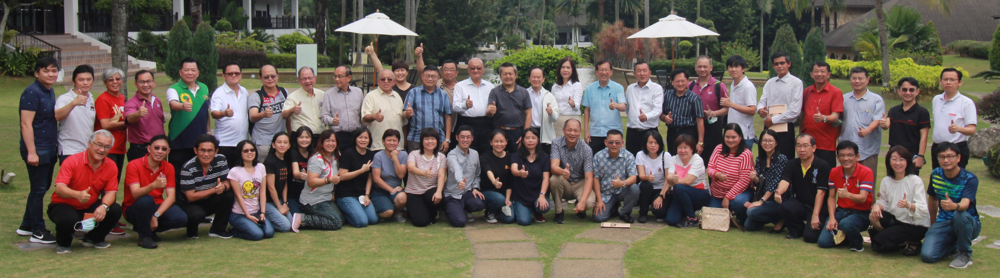

2022年董总激励营
参与者在激励营结束后合影。为了加强董总中央委员和行政高阶主管与相关执行人员对董总在华教运动中的角色与任务的认识和理解，同时让中央领导与行政团队之间能够互相扶携、精诚协作，董总于2022年10月28日至30日，在赛城Cyberview Resort and Spa举办“2022年董总激励营”，共有21位中央委员和29位行政部职员参与。
此激励营的目的是：一、认识华教运动的精神与使命；二、掌握董总的宗旨、核心任务、组织结构、运作和管理制度；三、熟悉董总行政部管理架构、运作和主要业务；四、凝聚力量，建立团队，达成共识。其目标为：规划2023年至2025年董总三年工作方向与重点；拟定2023年董总总体工作方向与重点；制定与总体工作方向相对应的工作项目与绩效、指标。
激励营在陈大锦主席致词后，正式掀开序幕。陈大锦在致词表示，希望激励营能增进董总中央领导和行政部同仁的关系，大家能够互相扶持，共同面对和解决华教所面对的各种问题和挑战。此外，他也分享了他与行政部同仁如何应对统考在过去的两年在疫情期间发生的难题，有赖于中央领导、华文独中工委会和行政部同仁的配合和努力，许多难题都得以解决，最后统考亦能顺利进行。
 中央委员罗志昌（左）和财政杨安山（右）在团康活动上玩猜拳游戏。
中央委员罗志昌（左）和财政杨安山（右）在团康活动上玩猜拳游戏。
董总第32届中央委员于2022年1月正式就职上任，许多中央委员作为中央领导层的新面孔，为了增进中央委员和行政部同仁互相认识与了解，激励营安排了象征破冰意义的团康活动打头阵，让参与者通过游戏的方式，在轻松愉悦的氛围下，相互认识。
在激励营第一天，第一场的分享与交流的主题为“华教领导、董总与华教运动”，分享人为副执行长（总务处）兼资料与档案局局主任锺伟前，主持人为会务与组织局局主任林纪松。锺伟前首先分享华教的发展历程、华教运动的进程，再阐述董总的角色功能和使命，深入浅出地呈现华教运动追求的核心目标。此外，他也分享了华教领导的素质养成，以及当前华教存在的问题和挑战。
第二场分享与交流的主题为“独中课题“，分享人为副执行长（学务处）兼教师教育局局主任曾庆方，主持人为资讯工艺局局主任罗丽蓉。曾庆方分享了独中教育发展面对的问题与挑战、独中教育改革的发展历程与愿景，接着说明董总和董教总华文独中工委会对独中教育的发展策略，并详细列明历年来董总推动师资培训体系的进程，以及建立师资培育机制的努力和成果。
在第二天，第三场分享与交流的主题为“华小课题“，分享人为资料与档案局研究员沈天奇，主持人为产业管理与事务局局主任李岳通。沈天奇分享华小现况及其所面对的问题和挑战，包括微型华小和增建、迁建华小的课题，剖析与解开私立学术学校和国际学校是否导致华小和华文独中的学生人数剧减的疑惑，讲解华小毕业生到华文独中升学的人数和比率、华小非华裔学生人数增长、华小董事会运作与董事个人注册，以及华小土地和师资问题。
第四场分享与交流的主题为“国民型中学课题“，分享人为秘书室独中教育研究与发展组研究员黄集初，主持人为财务局局主任蒋乙凤。黄集初说明了国民型中学的由来，并分享了他于2017年进行的国民型中学调查报告。该调查报告的内容涵盖：学校基本资料、校长和副校长的状况、三机构运作情况和学校与华团的关系、学校拨款、资助和筹款、华校特征，以及学校发展计划和挑战。
 参与者需合力拉扯手中的绳子，以将绳子套在纸杯上，把纸杯逐个叠起来。
参与者需合力拉扯手中的绳子，以将绳子套在纸杯上，把纸杯逐个叠起来。
过后，参与者针对上述4个课题进行分组讨论，然后每组委派代表汇报讨论结果。在分组讨论之前，激励营也穿插了一场团康活动，让组员通过一系列的游戏，建立起团队合作精神，以便在进行讨论时，能取得更好的成效。
激励营最后一天的汇报与交流主题为董总未来3年（2023年至2025年）工作方向及2023年行政部工作重点汇报，由执行长梁胜义、副执行长锺伟前和曾庆方进行汇报，主持人为考试局局主任林美燕。梁胜义汇报董总未来3年的工作方向分别为：一、强化组织联系，巩固华教运动；二、深耕母语教育，争取多元与文化平等；三、落实董总华教综合大厦之建设；四、筹募独中教改基金以推进独中教育之专业发展；五、储配接班梯队，优化组织结构与业务机制。接着，三位汇报人向参与者汇报了董总各个部门2023年的工作重点。
在激励营结束之前，秘书长庄俊隆总结致词时表示，他加入董总中央委员会已13年，见证了董总在这10多年的进步，从会徽的设立，再到推行ISO质量管理体系和I S M S资讯安全管理体系，整体的组织文化已经发生了很大的变化。组织的各种制度慢慢建立起来，培育优质的工作团队，才能做好一切事务，应对各项挑战。随后，参与者陆续分享各自的心得和感想，大家表示激励营的内容相当扎实，获益良多，希望接下来可以每年举办类似的活动，也鼓励各位中央委员踊跃参与。